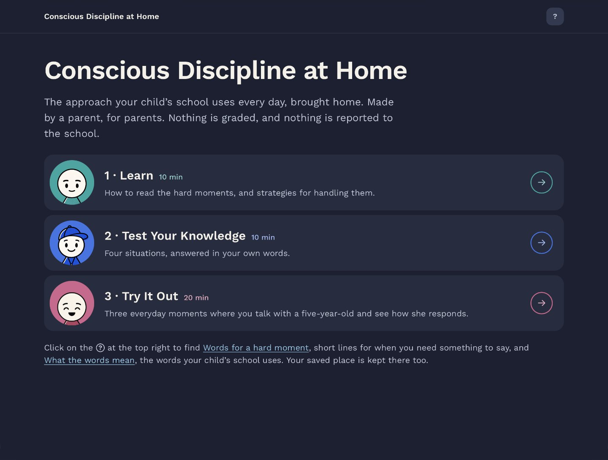
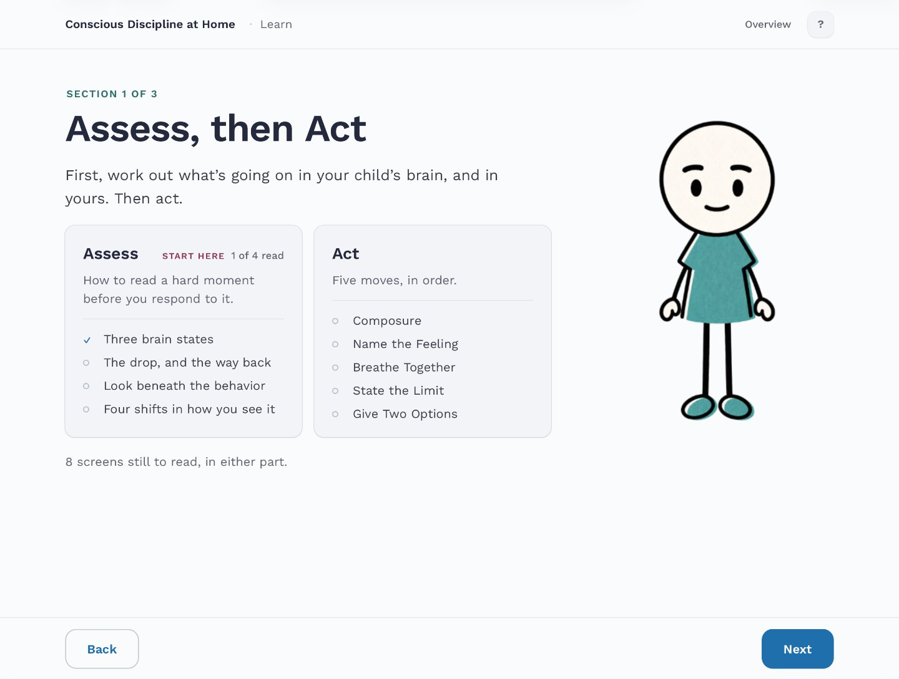
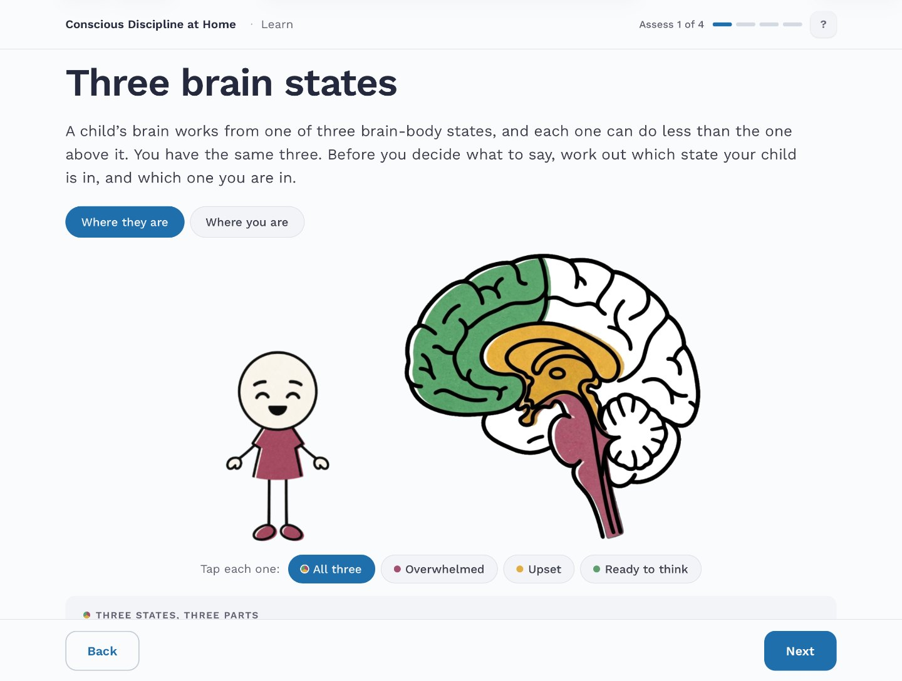
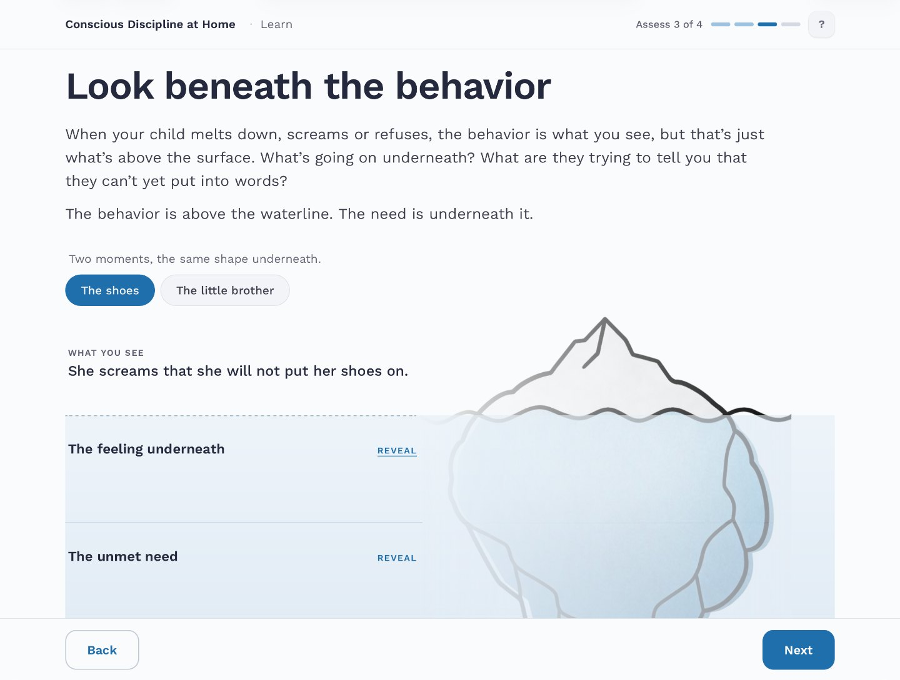
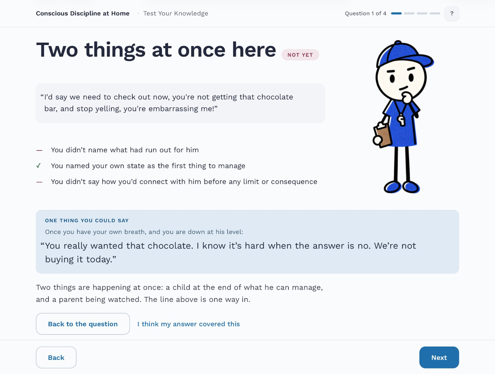
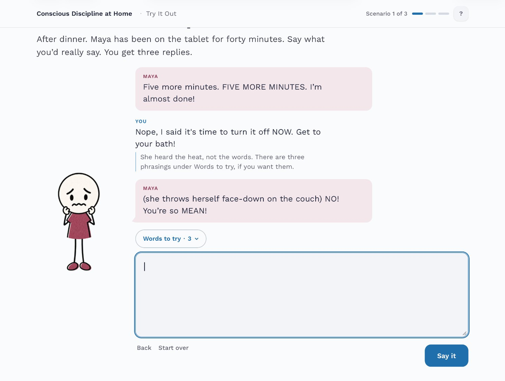

Case study · Conscious Discipline at Home
Busy parents need connection, not correction
A self-paced module I researched, designed, and built. It teaches parents their school’s discipline framework, then drops them into a real moment and responds to what they say.
The module
Screenshots from the alpha build, for testing with real parents






The title screen. Three sections, each with its own figure that will appear prominently in those sections: The Parent, The Coach, and The Child.
Learn is two parts, read in order: Assess (how to read a hard moment) and Act (five moves).
The three brain states, a central, science-backed idea within Conscious Discipline. Tapping a state changes the picture and its caption, and is set up so screen readers read them both together.
The behavior above the waterline, and the feeling and the need below it, revealed one layer at a time, across two everyday examples.
In assessment sections, the parent writes out their answers in their own words. The answers are judged against named criteria, and these feedback screens provide a run-down of how well their response fits the framework.
The second set of assessments, “Try It Out”, is structured as a dialogue with a 5-year-old child, Maya, who is going through some typical scenarios every parent faces. Parents’ own responses receive a quick note from The Coach, and a followup from Maya. After three responses, the feedback screen appears.
My role
Research, architecture, scenario writing, assessment design, UX, visual design, and the build. No client and no brief. I’m the parent it was written for.
Scope
3 sections · about 40 minutes as planned, resumable at any point.
Built with
HTML, CSS and JavaScript, built by hand. Rise 360 for the reading and reference parts.
The problem
The learning and disciplinary culture at my child’s school is built entirely around the Conscious Discipline framework. Teachers and admin spend months training, and parents are sent a one-page PDF summary. The parents I know agree with it. But the first time any of us actually needs it, it’s 7:40 in the morning, we’re running late, and our child won’t put their shoes on.
I built this module so parents could learn more in-depth about the framework and reinforce it at home. No one likes being told how to parent, so I designed it with the idea of connecting with them, parent-to-parent, with all our doubts and foibles, rather than correcting them by telling them what they did wrong. This means letting parents write out their answers in their words, then giving gentle feedback based on certain criteria. What it doesn’t mean is a score that says “Your parenting is only this good”: there are no percentages, no score at the end, and no judgment.
There are three sections: Learn covers how to read a hard moment (Assess, four screens) and then five moves for responding to it (Act). Test Your Knowledge is four everyday situations, answered in the parent’s own words. Try It Out is three short conversations with a five-year-old named Maya, three replies each.
Before Learn, the parent answers one moment cold, with no score. After Try It Out they see that answer again beside a short reflection, so they’re comparing themselves with their own first try rather than with a model answer.
Some core design decisions, and what I turned down
Each knowledge-check question needs more than one idea at once: the checkout line, the forced apology, the thing you said and regret, the skeptical grandparent. My first plan was to teach four core principles and then ask one question per principle. Making each question demand multiple principles at once helps test how the parent has synthesized what they learned, rather than just what they memorized.
There are no percentages anywhere. Every result is Strong, Nearly there or Not yet, with the criteria named in plain sentences, and there’s no overall score at the end. For a while I had a percentage per scenario with no total. It was precise enough to invite arithmetic and too incomplete for the arithmetic to mean anything. It also meant handing a parent a number like 62% for staying calm with their own child, and I wouldn’t want that number about myself.
Help comes in two kinds, and I kept them apart. The phrases a parent might want mid-answer sit in a collapsed strip called Words to try, right above the answer field. Things you read once, like the glossary and the privacy note, are in a single panel behind a ? button. A single Help drawer would have put reference reading in the way just when someone needs three words fast. A permanent side rail looked best on paper, but it takes 268 pixels, and on a phone that leaves no room for the answer. I also tried dragging phrase cards into the field. It fought scrolling and the on-screen keyboard, and it couldn’t be done by keyboard or screen reader at all.
Answers are checked by rules, not AI. Each criterion is a list of the ideas and wordings it accepts, matched loosely enough that “breathe” also catches “breathing,” and it all runs in the parent’s browser. A language model would understand answers the lists miss, and the first parent test showed what that gap costs. But a model needs a server, and the parent’s consent to send what they write about their child somewhere else. I’d promised that nothing leaves the device. Rules keep that promise, and I can test them answer by answer. An optional AI check is planned for the next version, and since the test it’s nearer the top of the list.
I went through the whole module with VoiceOver, on an iPhone and on a Mac, on top of a script that checks every screen at desktop and phone widths. The automated checks had come back clean. Listening found what they couldn’t: VoiceOver split sentences apart at every bold word, and read Maya’s reply before the parent heard their own. Neither is a code error, so no checker flags them. Both are fixed.
Most of these decisions come down to tone and stakes, and I learned that part teaching. Getting someone to try a thing they expect to be bad at, and keeping them willing to try again, was my job in the classroom long before I built any of this.
“I’ve come to understand that learning is never just about mastering what’s written in books. What meant even more to me was the sense of warmth I felt in Dr. LeMay’s class — it truly made FSU feel like a home away from home.”
The subject is parenting, but the design problem is one workplace training has too: judging what someone wrote, in a situation where being told you’re wrong stings. Compliance scenarios, feedback training and difficult-conversation practice all need the same things. Prompts that can’t be answered by copying the last screen, feedback that says what was missing instead of giving a score, and help that’s there mid-task without taking over.
Evaluation
I planned evaluation in ADDIE’s order: build the module, have it reviewed, then watch parents use it while thinking out loud, and read their answers against the checker. Any answer the checker marked wrong that a person would mark right would count as a gap in the answer criteria.
The first parent tried it on October 5, 2026, with me sitting in. Something was unclear to her on nearly every screen. Learn took her about thirty minutes, against the ten the title screen promised. On the first knowledge-check question she wrote a sound answer and was told Not yet, and I ended the session there.
It came down to two problems. Learn asks too much before a parent knows what it’s for, and a rules-based checker can’t recognize a good answer worded in a way I didn’t expect. Until then, everyone who’d read the module already knew the material, me included.
So instead of working toward a launch date, I’m now working in SAM-style rounds of designing, testing and revising. Next I’m talking with educators who use the approach. After that comes a shorter Learn and a rethink of how answers are judged, then new parents, in rounds small enough to run within a week.
After launch there’ll be one follow-up question, thirty days out: did you use any of it? It’s the only measure of whether the module did what it set out to do, and also the weakest, since it relies on what parents report. With a second group I’d add an unannounced fourth conversation instead.
The working documents
The alternatives, the reasoning, and the two I lost. September 2026.
How answers are checked, how Maya responds, the safety responses, and what is stored. Updated October 2026.
Every screen in parent-journey order, gaps marked as gaps. September 2026; the module has grown since.
Type scale, the three-color system, the light/dark rule. September 2026; the palette has moved on since.
What I’m looking for
A team where a design that isn’t working gets fixed in days. If you’re hiring for instructional or learning experience design, I’d like to hear about it, and I’m glad to walk through any decision on this page in more detail.